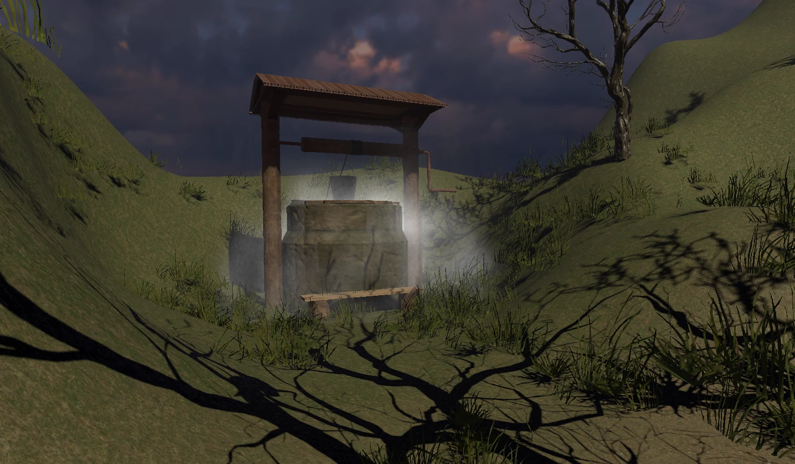
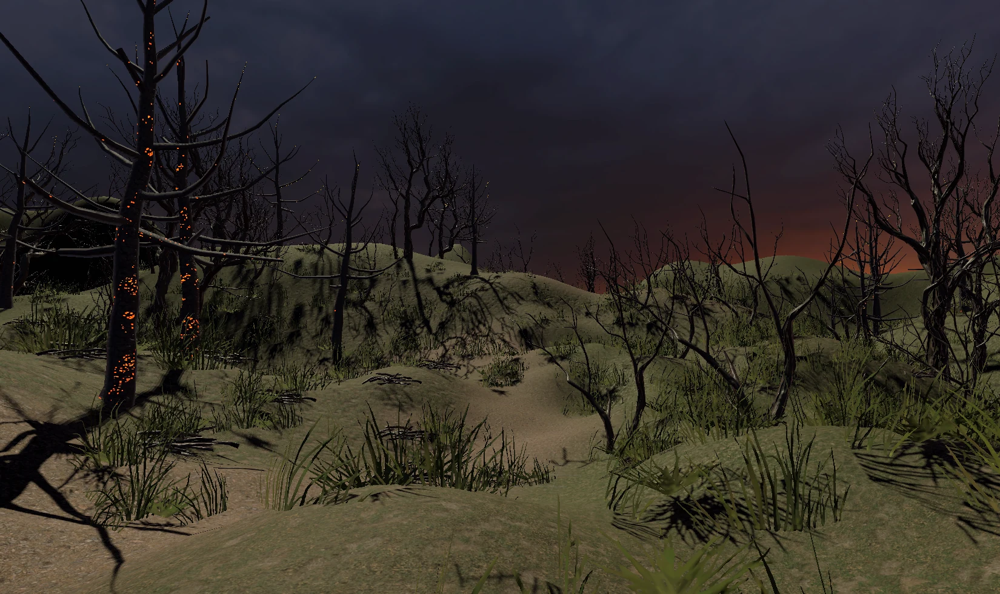
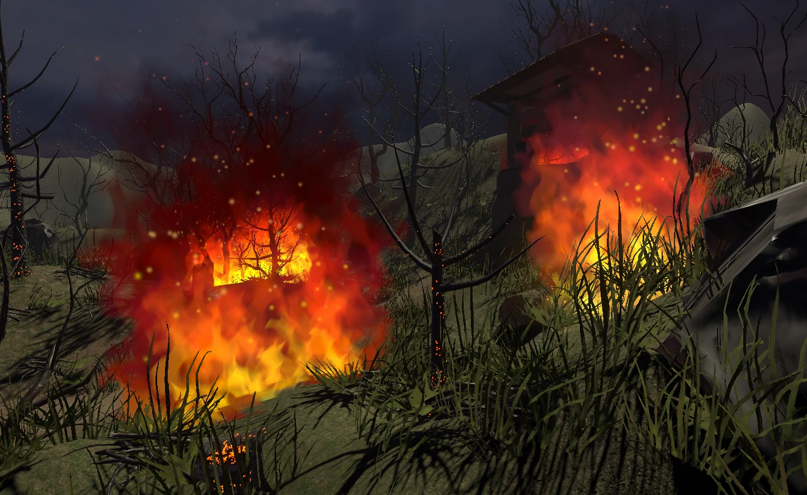
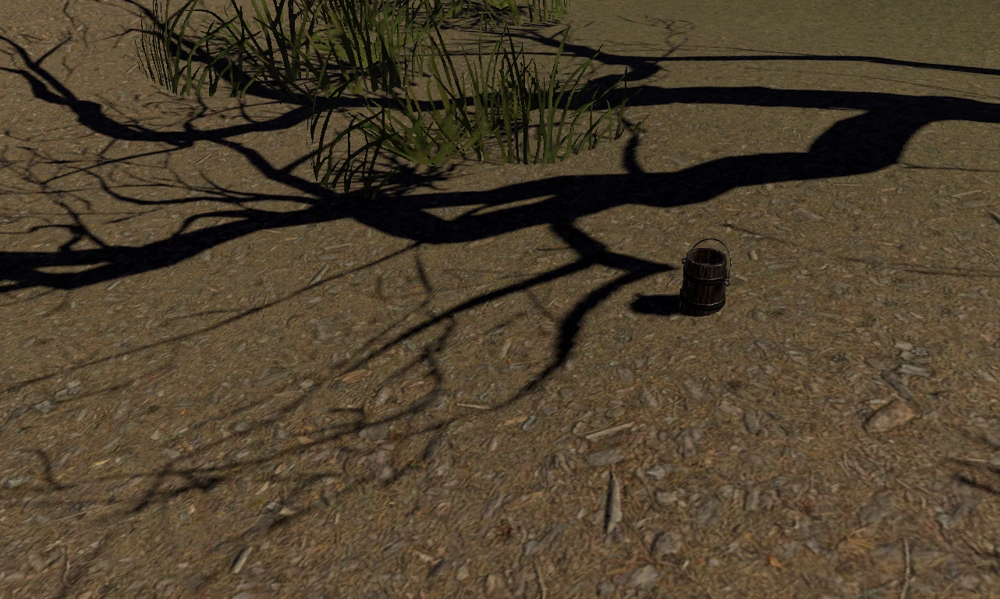
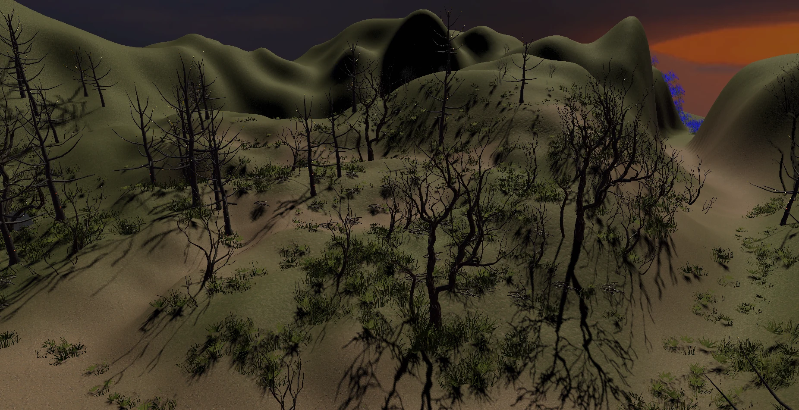
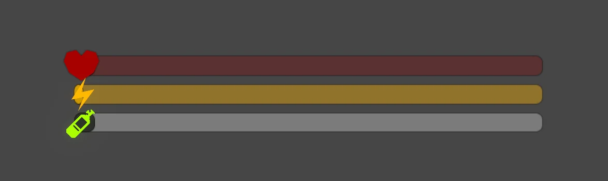

FireEscapeVR
A VR fire escape simulation for Oculus Quest 3 that places players inside a tense forest fire scenario, combining environmental hazards, stamina and smoke management, spatial audio guidance, and survival decision-making to explore how immersive interaction can support fire safety training.
Project Overview
FireEscapeVR is a VR escape simulation built for Oculus Quest 3. Players enter a realistic natural landscape under the threat of a forest fire, learn the controls through step-by-step onboarding, and then navigate a tense escape sequence while managing stamina, smoke exposure, environmental hazards, and limited resources.
Multi-dimensional Immersion
The experience is designed to trigger urgency through tightly combined visual, audio, and haptic feedback. Precise spatial sound helps players distinguish the correct direction of danger and escape cues, while visual post-processing and controller vibration reinforce the physical stress of fire proximity, smoke damage, and movement under pressure.
Core Mechanics & Systems
The simulation includes a stamina system that controls sprinting and movement speed, a smoke poisoning system that accumulates through exposure, and a fire proximity system that triggers damage and post-processing effects. Players must avoid falling branches, use the well's safe zone to clear smoke, manage consumable props such as the water bottle, and make timely decisions in order to survive.
On the technical side, the project combines URP post-processing, a custom Voronoi flame shader, 360-degree spatial audio, ambient crisis cues, Quest 3 haptics, XR grab-based object interaction, and HUD feedback for stamina and smoke levels.
Narrative Flow
The experience begins in a tutorial menu scene where players page through controls using the left and right triggers. The final tutorial step loads the escape scenario, where the XR Origin is preserved and relocated to the in-game spawn point. From there, the player must read environmental sound cues, control physical status in real time, and escape the forest fire zone through a sequence that simulates the logic and pressure of real emergency response.
Training Value
By simulating the embodied process of evacuation in a high-pressure environment, FireEscapeVR has potential value for fire safety training and emergency drills. It can also serve as a core demonstration module within a larger VR safety training system.
Gallery





